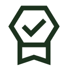

Verktøykasse
Verktøy, rammeverk og opplæringsmateriale for utviklere som ønsker å jobbe bærekraftig

Lær mer om grønn kode
Artikler om bærekraftig utvikling og hvorfor dette er så viktig i dag

RJJ Software: En suksesshistorie
Les om hvordan RJJ Software har gått frem for å lykkes med å gjennomføre grep for miljøvern og økt bærekraft

Kunnskapsbygging med sertifisering
Kurs og sertifiseringer kan bidra til å styrke din bedrifts posisjon i markedet. GCI hjelper deg dit